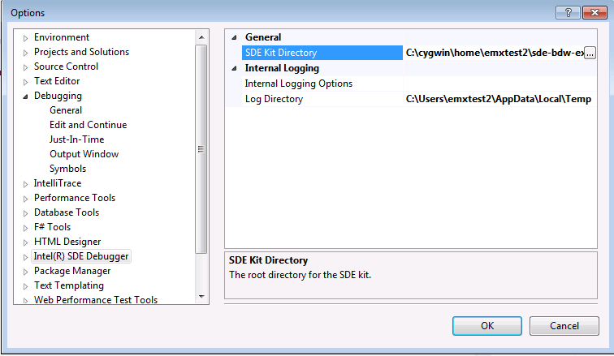
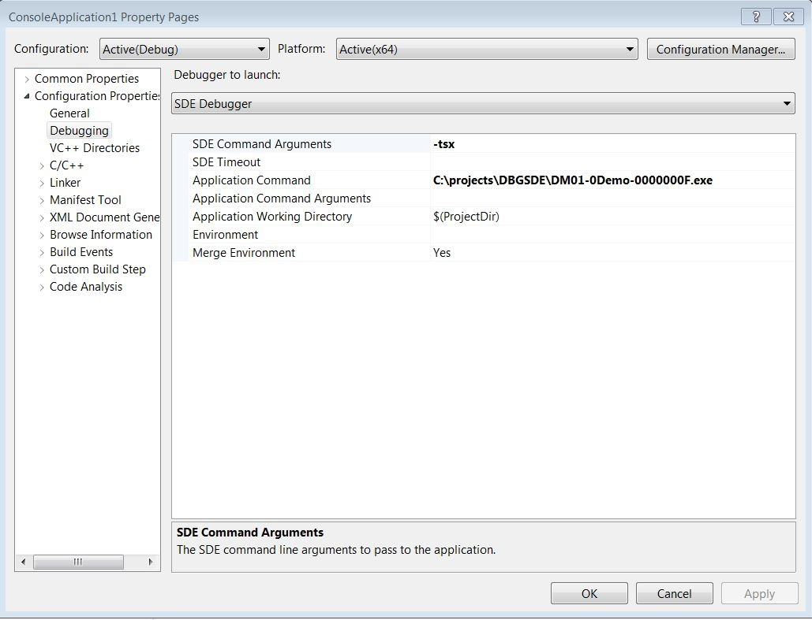
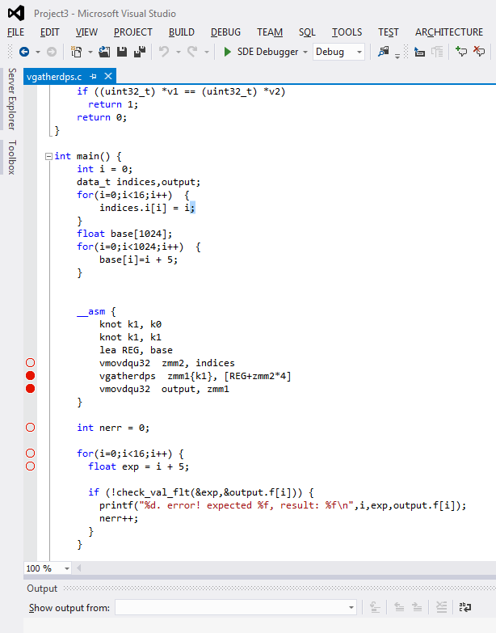
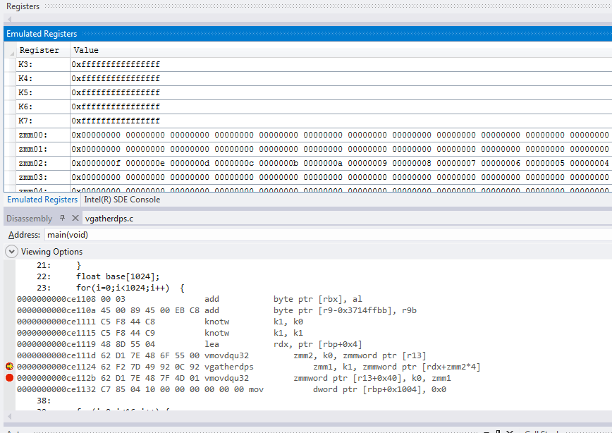
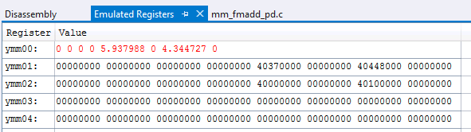

Debugging Applications on Windows
On Windows, Intel® Pin provides application debugging with a debugger extensions package that use the GDB server protocal to communicate between the debugger and the emulated process. This mechanism provides the Microsoft Debugger the information it needs.
This a very strong and significant feature on SDE. Users can debug applications that run under SDE on Windows using Visual Studio versions: 2015 & 2017.
The experience is just like debugging a native application in Visual Studio, except that the user is debugging an application as it is emulated by Intel® SDE.
For Visual Studio versions: 2015 use the sde-msvs2015-3.0.3.msi package. For Visual Studio versions: 2017 use the SdeVS2017Plugin.vsix package. These packages can be download from the same place as the Intel® SDE kit.
Capabilities
The Intel® SDE extensions to MSVS give you the following capabilities.
The ability to launch a debug session under SDE.
An extension to the standard MSVS disassembly window that knows about new instructions.
Setting breakpoints and using single-step over new instructions.
A new window for emulated register. This window displays the values of emulated registers. The values can be displayed in various formats.
A new “SDE console” window which can be used to pass additional debugging commands.
Prerequisites
The host should be at least Windows 10 and Visual Studio 2015 or 2017. You can use any of the editions (Ultimate, Professional, etc.), except that the Express edition doesn’t work. The Intel® SDE VS installer contains the MSVS GUI integration feature. It is not paired to any particular Intel® SDE version or chip architecture. It contains no confidential information. You can upgrade SDE without changing the MSI. As new features become available in the MSVS integration, we will provide new packages.
Note
Debugger extensions package to newer version of MSVS are not available yet.
Instructions
First, install the prerequisites listed above. Then, do the following to enable debugging with SDE:
If you do not already have an MSVS project file, you must create one. I typically create an empty project and specify the executable that I want to debug in the “Application Command” property. Also set the “Application Command Arguments”, if you have any. At the top of the project properties there is a drop-down labeled “Debugger to launch”. Change this drop-down to “SDE Debugger”. Set the “SDE Kit Directory” property to point to the root of your SDE kit. There is a <Browse> option that allows you to choose the directory with the file browser. Click OK to save your changes.
Edit “SDE Kit Directory” under: Debug -> Options and Settings … -> Intel(R) SDE debugger.
{kind=link}
Then set the “Application command” and relevant “SDE Command Arguments” fields in project properties.
{kind=link}
Before starting the debugger, you probably want to set some breakpoints in your application. Do this by opening a source file in MSVS, navigate to a line, and press F9. When you are ready, start debugging either by pressing F5 or start debugging option in the Debug menu.
{kind=link}
Once a debugger session is started, you can view the emulated registers and see the emulated instructions. Open the Emulated Registers window by choosing “DEBUG->Windows->Emulated Registers” in the IDE. Open the disassembly window by choosing “DEBUG->Windows->Disassembly”.
{kind=link}
By right clicking on a register, you can change its display format to various formats. This includes single and double precision, signed/unsigned integer widths in hex or decimal view.
{kind=link}
In the Intel® SDE console window, you have various lower level options for talking to SDE using the same command syntax used with GDB on Linux. Open this window by choosing “DEBUG->Windows->Intel(R) SDE Console”.